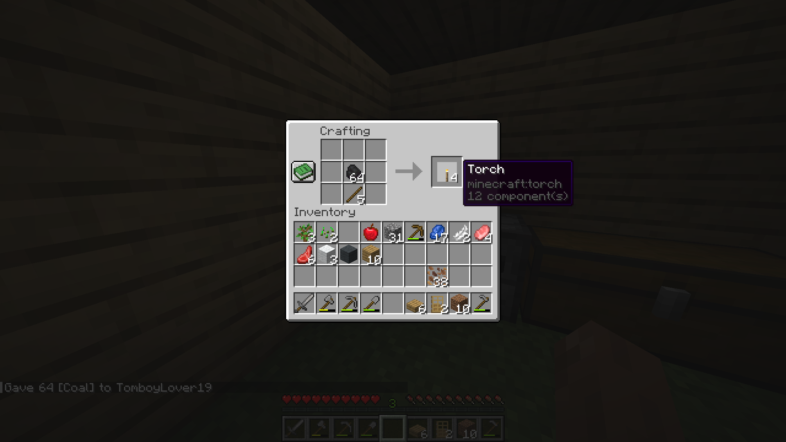

How to Explore Caves More Safely

Caves can provide ore and a quick route underground, but a large cave is easy to enter and difficult to navigate. Treat each trip as an excursion with a destination and a return plan rather than exploring every opening at once.
Carry a useful kit
Take food, a pickaxe, torches, a shield, and building blocks. Bring a water bucket if available, and leave space for the materials you expect to collect. A bed can help set a nearby respawn point before a distant expedition, but place it somewhere protected rather than inside a dangerous cave.
Mark the route as you go
Place torches on the same side of the path as you enter. On the way out, keep the torches on the opposite side. Use blocks or signs at confusing junctions and light dark corners before mining nearby ore. This both makes the return route easier to read and helps reveal threats before you approach them.
Choose a safe stopping point
Do not keep pushing forward when your food is low, your tools are close to breaking, or your inventory is nearly full. Return to the surface, store your haul, and repair or replace gear before another trip. If you find a deep drop, scout it from a ledge and make a deliberate staircase or water route rather than jumping down. A calm retreat is usually more valuable than one extra vein.
- Bring food, torches, a shield, a pickaxe, and blocks.
- Mark branches and light the route consistently.
- Turn back before supplies run low or the inventory fills.